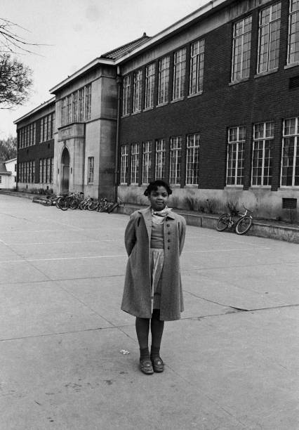
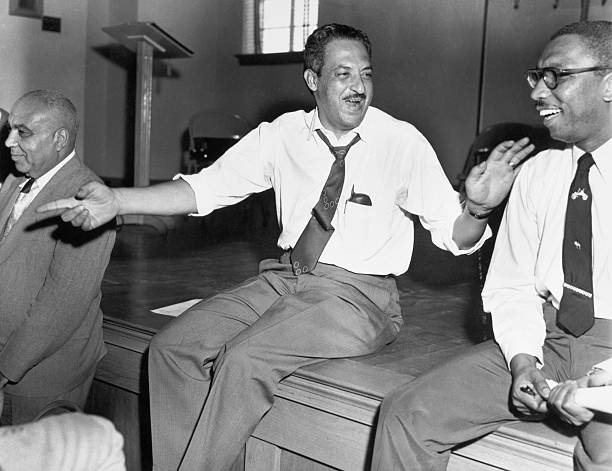

The Case: From Topeka to the Supreme Court
A Father's Fight for His Daughter
Photo: Getty Images
The story began simply. Oliver Brown, a welder and part-time minister in Topeka, Kansas, wanted his seven-year-old daughter Linda to attend Sumner Elementary School, located just seven blocks from their home. Instead, Topeka's segregated school system required Linda to walk six blocks to a bus stop, ride a bus across town, and attend Monroe Elementary School, an all-Black school more than a mile away.
In September 1950, Brown attempted to enroll Linda at Sumner Elementary. School officials refused. Brown contacted the NAACP, which had been seeking parents willing to challenge school segregation. Twelve other Black families joined the lawsuit. Though Oliver Brown became the named plaintiff because his name came first alphabetically, all these families showed remarkable courage in publicly challenging segregation.
Five Cases Become One
Brown v. Board of Education actually consolidated five separate cases from different states. Each challenged school segregation, but they represented different circumstances and legal approaches. This consolidation strengthened the challenge by showing that segregation harmed children throughout the nation, not just in one community.
The Five Cases
- Brown v. Board of Education (Kansas): Oliver Brown challenged Topeka's elementary school segregation
- Briggs v. Elliott (South Carolina): Parents in Clarendon County challenged grossly unequal schools
- Davis v. County School Board (Virginia): High school students in Prince Edward County protested poor facilities
- Gebhart v. Belton (Delaware): Parents challenged Wilmington-area school segregation
- Bolling v. Sharpe (District of Columbia): Parents challenged segregation in Washington schools
Each case revealed the harm segregation inflicted on children. In Clarendon County, South Carolina, the disparity was shocking: the county spent sixty-one dollars per white child but only forty-three dollars per Black child. Black students attended schools without indoor plumbing, adequate heating, or sufficient desks. When parents simply requested school buses like those provided for white children, they faced economic retaliation and violence.
The District Court Decision
The federal district court in Kansas heard Brown's case in June 1951. The three-judge panel faced a difficult decision. They acknowledged that segregation harmed Black children, agreeing with expert testimony from psychologists about the psychological damage of enforced separation. However, they felt bound by the Supreme Court's precedent in Plessy v. Ferguson.
The court found that Topeka's Black and white schools had substantially equal facilities, teachers, transportation, and curriculum. Following Plessy, they ruled against Brown. Yet their findings about psychological harm provided crucial ammunition for the appeal. The decision practically invited the Supreme Court to reconsider the "separate but equal" doctrine.
Thurgood Marshall's Strategy
Thurgood Marshall, director of the NAACP Legal Defense Fund, led the legal team. Marshall had spent years preparing for this moment through earlier victories chipping away at segregation. His strategy was bold: rather than simply arguing that Black schools were unequal, he would attack the entire premise that segregation could ever be constitutional.
Photo: Getty Images
Marshall assembled an impressive team of attorneys and expert witnesses. He recruited psychologists Kenneth and Mamie Clark, whose famous doll studies demonstrated that segregation made Black children feel inferior. When shown brown and white dolls, many Black children expressed preference for the white dolls and attributed negative characteristics to the brown dolls, revealing the psychological damage of segregation.
Supreme Court Arguments
The Supreme Court first heard arguments in December 1952. Marshall emphasized three main points. First, the Fourteenth Amendment's framers intended to prohibit all state-imposed racial distinctions. Second, segregation inherently conveyed a message of Black inferiority that violated equal protection. Third, social science evidence proved that segregation psychologically harmed Black children and interfered with their education.
"I got the feeling on hearing the discussion yesterday that when you put a white child in a school with a whole lot of colored children, the child would fall apart or something. Everybody knows that is not true." Thurgood Marshall, oral argument before Supreme Court, December 1952
Supreme Court oral argument transcript
The states defending segregation argued that Plessy had been settled law for half a century. They claimed states had the right to segregate schools to preserve social order and prevent racial conflict. Some argued that integrated schools would harm both races. South Carolina's attorney even suggested that ending segregation would lead to racial intermarriage, revealing the deeply racist assumptions underlying the segregation system.
Reargument and Deliberation
The Court could not reach a decision in 1952. The justices were divided, and Chief Justice Fred Vinson seemed inclined to uphold segregation. The Court ordered reargument for the following term, asking both sides to address specific questions about the Fourteenth Amendment's original intent and how desegregation might be implemented.
Events took an unexpected turn when Chief Justice Vinson died suddenly in September 1953. President Eisenhower appointed California Governor Earl Warren as the new Chief Justice. Warren proved instrumental in achieving a unanimous decision, believing that such a momentous ruling required the Court to speak with one voice.
During reargument in December 1953, Marshall refined his arguments. The Legal Defense Fund submitted extensive historical briefs showing that the Fourteenth Amendment was meant to eliminate racial discrimination. Marshall emphasized that the Court should decide the case based on current understanding of education and psychology, not nineteenth-century views.
Behind the scenes, Chief Justice Warren worked to convince his colleagues that segregation must end. He personally wrote the opinion to keep it clear and readable, avoiding technical legal language. Warren understood this decision would profoundly affect American society, and he wanted every citizen to understand the Court's reasoning.
The Waiting Period
For months after reargument, the public waited for the Court's decision. The justices deliberated carefully, knowing their ruling would spark fierce controversy. Southern politicians had already threatened massive resistance if the Court struck down segregation. The justices understood they were not merely deciding a legal question but potentially transforming American race relations.
Finally, on May 17, 1954, Chief Justice Warren announced the unanimous decision from the bench. The courtroom filled with tension as he began reading the opinion that would change history.